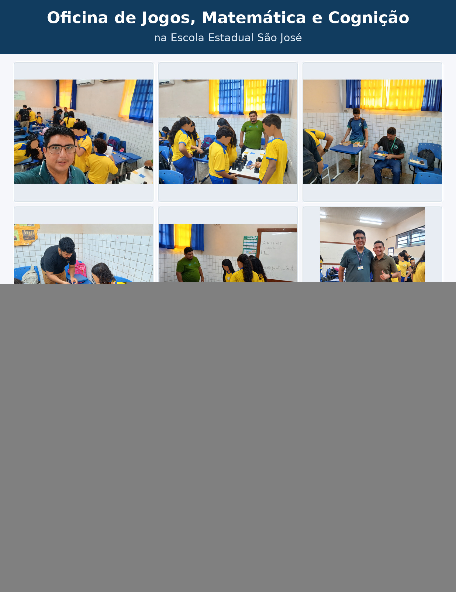
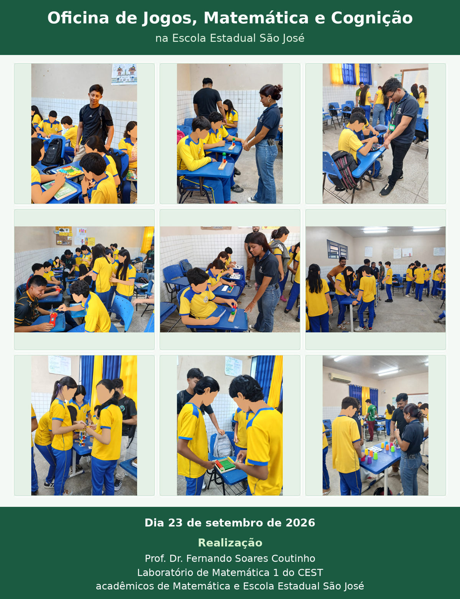

Tefé — Amazonas
Jogos, matemática e cognição
Oficina de Jogos, Matemática e Cognição
Escola Estadual São José — Tefé/AM
No dia 23 de setembro de 2026, realizamos na Escola Estadual São José, Tefé-AM, a Oficina de Jogos, Matemática e Cognição, nos turnos matutino e vespertino, em turmas do 7º e 8º anos do Ensino Fundamental.

Circuito de jogos
Dez desafios, diferentes estratégias.
Foi trabalhado um circuito de 10 jogos: 1) Desafio da Argola Elétrica; 2) Desafio dos nós; 3) Desafio da Torre de Londres; 4) Desafio dos blocos geométricos; 5) Desafio da Torre Inteligente; 6) Desafio dos copos coloridos; 7) Desafio Fecha-Números; 8) Desafio da Torre de Hanói; 9) Desafio do Tangram; 10) Desafio das Cores Escondidas.
Matemática e cognição
Experimentar e buscar outros caminhos.
Todos estes jogos trabalham a atenção sustentada, memória, controle inibitório e flexibilidade cognitiva, tão importantes na resolução de problemas matemáticos. Pois ao nos depararmos com um problema matemático é fundamental não apenas fazer os cálculos instantaneamente, mas é preciso ler com atenção, extrair as informações, pensar em estratégias para resolver e executar estas estratégias. E, em caso de insucesso, é necessário que busquemos outros caminhos com o objetivo de resolvê-lo.
Registros da oficina
Jogos e descobertas ao longo do dia.
Três painéis com momentos das atividades realizadas com os estudantes da Escola Estadual São José.


Realização: Prof. Dr. Fernando Soares Coutinho, Laboratório de Matemática 1 do CEST, acadêmicos de Matemática e Escola Estadual São José.